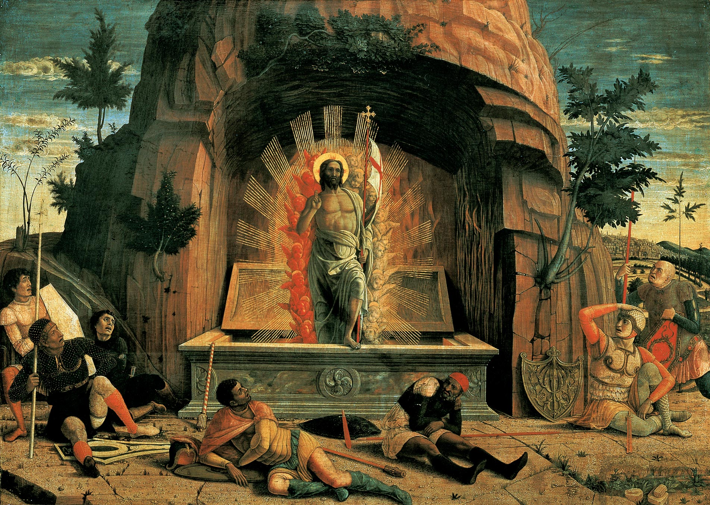
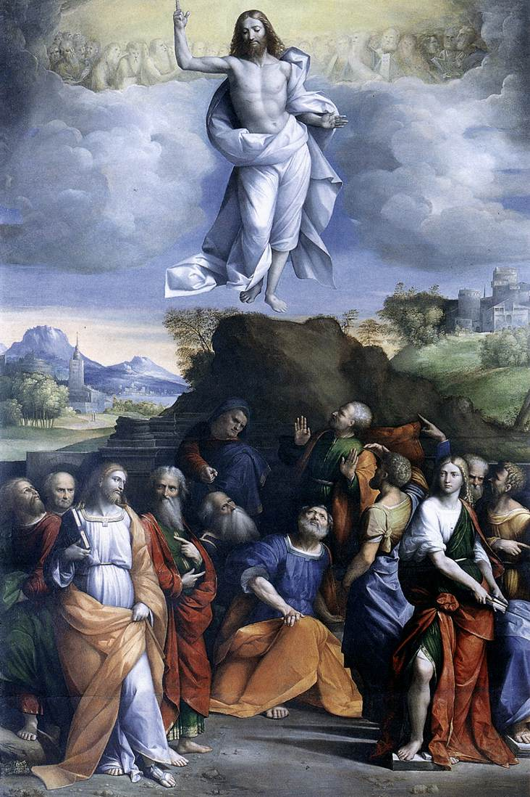
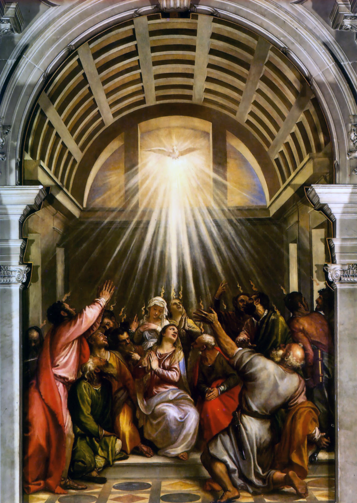
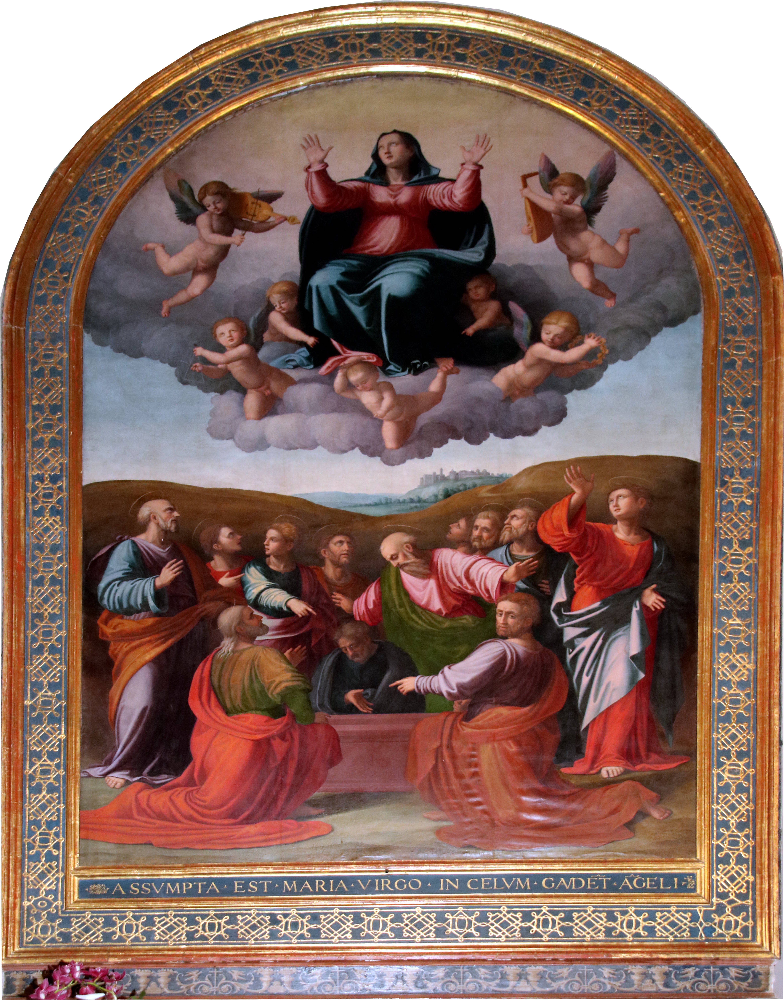
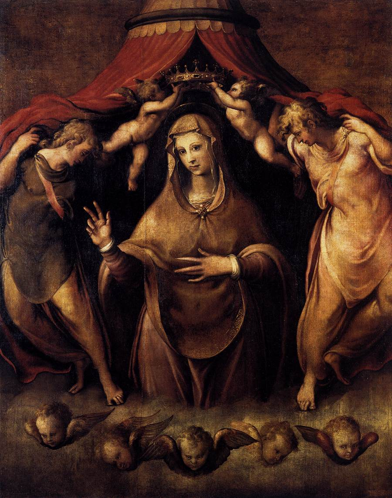

1. The Resurrection

"He has risen, He is not here. Behold the place where they laid him." (Mark 16, 6)
2. The Ascension

So then the Lord, after He had spoken to them,
was taken up into heaven, and sits at the right hand of God. (Mark 16, 19)
3. Descent of the Holy Spirit

And they were all filled with the Holy Spirit and began to speak in foreign tongues,
even as the Holy Spirit prompted them to speak. (Acts 2,4)
4. The assumption

"And a great sign appeared in heaven: a woman clothed with the sun, and the moon
was under her feet, and upon her head a crown of twelve stars." (Apocalypse 12,1)
5. The coronation

"You are the glory of Jerusalem, the honour of our people...
the hand of the Lord has strenghtened you, and therefore
you shall be blessed forever." (Judith 15, 10-11)